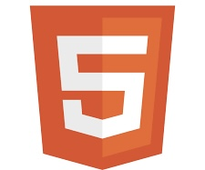
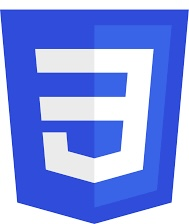
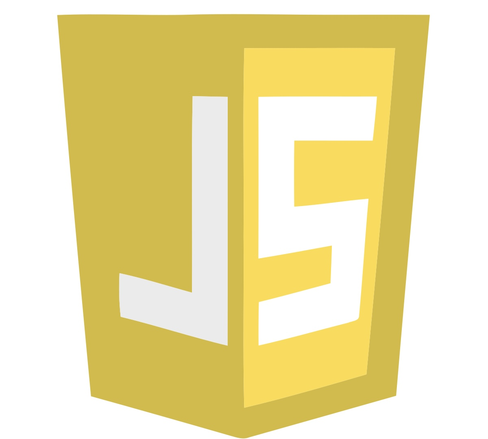
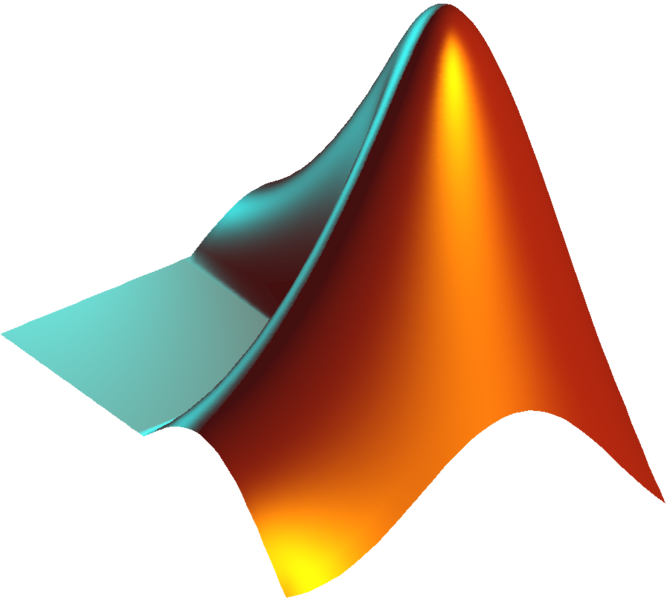
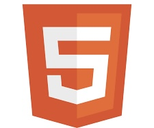
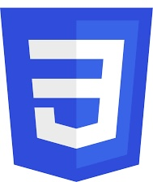
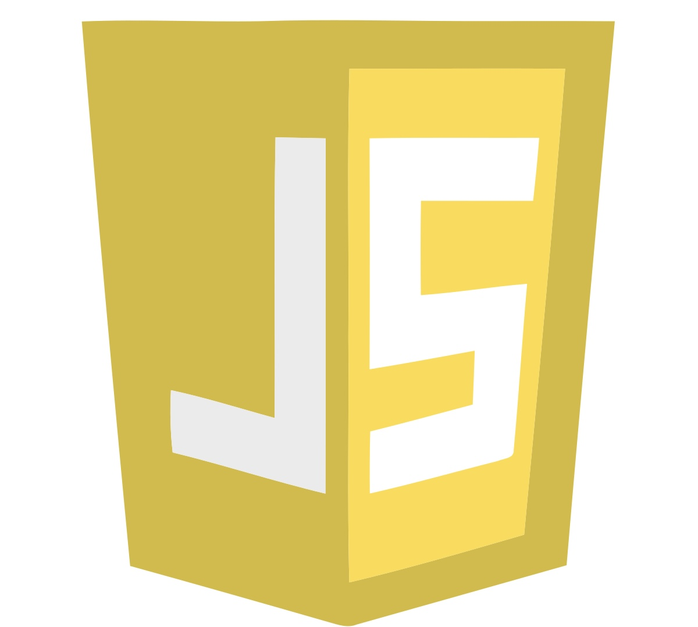
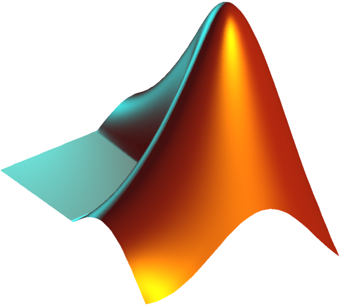

Work Experience
Founder - WealthWise
Baltimore, MD | May 2023 - Present
-
Conceptualized and designed the overall vision of WealthWise - an actionable mobile app that empowers teenagers with
crucial financial knowledge and decision-making skills.
-
Led the coding and implementation of the app using React Native, collaborating with financial experts to establish
credibility and create interactive, gamified modules and immersive application exercises.
Web Developer and Business Development Lead - 15 No. Spices
Delhi, Delhi | May 2023 - August 2023
-
Led the design and development of the company website using HTML5, CSS3, and modern JavaScript frameworks.
-
Implemented effective marketing strategies, including outsourcing SEO services, resulting in increased brand awareness
and customer engagement - 15 No. Spices received an esteemed award at the Captivating Creation Awards in Nepal in recognition of outstanding achievements and exploring new export opportunities.
American Marketing Association (Nest) Analyst - Galen Robotics
Baltimore, MD | September 2022 - Dec 2022
-
Conducted extensive research on existing products and competitor marketing strategy for Galen Robotics - a startup
democratizing microsurgery.
-
Created a shot list and storyboard to design a graphical framework for an animated video using the company's pitch deck.
Founder and Head Tutor - Providentia Tuitions
Delhi, Delhi | April 2021 - July 2021
-
Provided personalized one-on-one tutoring sessions and implemented a curriculum for Java, C, C++, and Python, tailored
specifically to the needs and skill levels of high school students.
-
Hired instructors to facilitate the completion of designated projects, identify lagging skills, and correct weaknesses.
Summer Research Intern - Evermore India Pvt. Ltd.
Delhi, Delhi | July 2020 - August 2020
-
Analyzed the business model of Bombay Hemp Company (BOHECO) and conducted comparative financial analysis.
-
Collaborated with company officials to create a comparative report on economic feasibility of CBD extraction methods.
Projects
Image Processing Software
Baltimore, MD | September 2023 - October 2023
-
Coded an CLI-enabled image-processing program in C++, akin to Adobe Photoshop or The Gimp, with advanced capabilities like dithering, quantization, sampling and morphing.
Chat Client Program
Baltimore, MD | April 2023 - May 2023
-
Developed a chat client program in C++ that enables synchronous real-time communication with a server over TCP connections, employing concurrency and synchronization primitives inspired by classical chat systems like IRC.
DeliverBot
Baltimore, MD | September 2022 - Present
-
Programmed robot navigation in C++ by accessing odometer, accelerometer, magnetometer, and GPS data to create an autonomous food-delivery robot.
fMRI Analysis of Retinotopy in the Visual Cortex
Baltimore, MD | November 2021 - December 2021
-
Modeled BOLD signal data for voxels in the occipital lobe using MATLAB for dynamic visualization.


 






